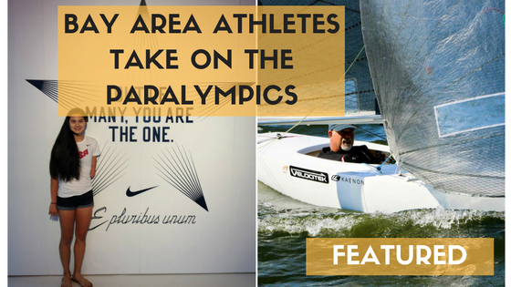
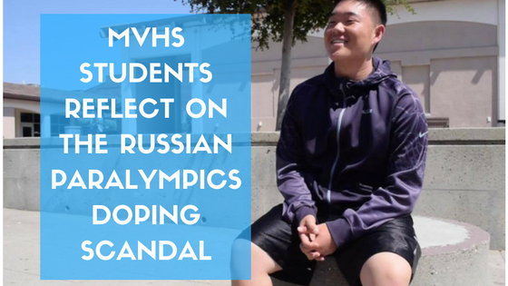
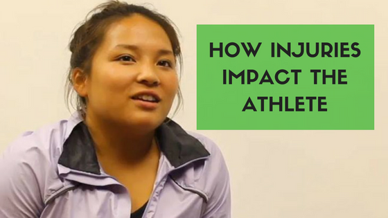
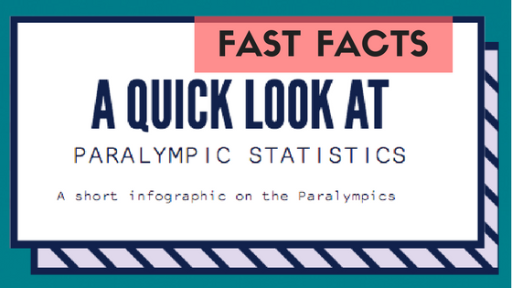

<!DOCTYPE html>
<html lang="en">
<head>
</head>
<body></body>
</html>
<meta content="text/html; charset=utf-8" http-equiv="Content-Type" /><!-- Meta, title, CSS, favicons, etc. -->
<meta content="IE=edge" http-equiv="X-UA-Compatible" />
<meta content="width=device-width, initial-scale=1" name="viewport" />
<meta content="Breaking into the bubble - 2016" name="description" />
<meta content="Shar Rahman" name="author" />
<title>PARALYMPICS | EL ESTOQUE</title>
<link href="https://fonts.googleapis.com/css?family=Lora" rel="stylesheet" type="text/css" />
<link href="./bootstrapsite/bootstrap.min.css" rel="stylesheet" />
<link href="./bootstrapsite/docs.min.css" rel="stylesheet" />
<link href="https://fonts.googleapis.com/css?family=Roboto" rel="stylesheet" />
<link href="//fonts.googleapis.com/css?family=Raleway" rel="stylesheet" type="text/css" /><!-- Favicons -->
<link href="http://elestoque.org/favicon.ico" rel="icon" /><!-- Docs master nav -->
 <header class="navbar navbar-static-top bs-docs-nav" id="top" role="banner">
        <div class="container">
            <div class="navbar-header">
                <button class="navbar-toggle collapsed" type="button" data-toggle="collapse" data-target="#bs-navbar" aria-controls="bs-navbar" aria-expanded="false">
                    <span class="sr-only">Toggle navigation</span>
                    <span class="icon-bar"></span>
                    <span class="icon-bar"></span>
                    <span class="icon-bar"></span>
                </button>
                <a class="navbar-brand">El Estoque</a>
            </div>
            <nav id="bs-navbar" class="collapse navbar-collapse">
                <ul class="nav navbar-nav">
                    <li>
                        <a href="#intro">Intro</a>
                    </li>
                    <li>
                        <a href="#bayarea">Bay Area Paralympians</a>
                    </li>
                    <li>
                        <a href="#doping">Doping Scandal</a>
                    </li>
                    <li>
                        <a href="#Injuries">Injuries</a>
                    </li>
                    <li>
                        <a href="#stats">Statistics</a>
                    </li>
                    
                </ul>
                <ul class="nav navbar-nav navbar-right">
                    <li><a target="_blank" href="https://www.facebook.com/El-Estoque-Online-125983130796076/">FB</a></li>
                    <li><a target="_blank" href="http://twitter.com/elestoque">Twitter</a></li>
                    <li><a target="_blank" href="http://instagram.com/elestoque">Instagram</a></li>
                </ul>
            </nav>
        </div>
    </header>
<!-- Page content of course! --><main class="bs-docs-masthead" id="content" role="main" tabindex="-1">
<div class="container"><span class="bs-docs-booticon-lg" style="font-family: Raleway; text-shadow: 2px 2px 0px #000">A LOOK AT THE PARALYMPICS</span>

<p class="lead" style="font-family: Roboto"></p>
</div>
</main>

<div class="bs-docs-featurette">
<div class="container" id="intro">
    <h2 class="bs-docs-featurette-title">Introduction</h2>
        <p class="lead">One sporting event that stands out among all others are the Paralympics. According to BBC, there is no event that is more large-scale and has as much historic value. 160 countries compete with over 4300 athletes, all with varying disabilities. The world becomes a stage as athletes from countries all over the world gather to display their athletic expertise. The Paralympic Games showcase the achievements of these athletes to a global audience and challenges the stigma around their disabilities.</p>
        <p class="lead">The Paralympics take place directly after the Olympics and both events capture the essence of sportsmanship and competition. There is nothing that celebrates the idea of sports more than an event that involves handicapped athletes. To see these athletes overcome their challenges, from paraplegia to hearing loss, is what makes the Paralympics an important event for humanity as it defeats the negative perceptions around these athletes’ disabilities.</p>
        <p class="lead">Browse through this package to learn more about the phenomenal athletes and their inspiring stories amidst one of the biggest sporting competitions in the world.</p>
        <p class="lead">The opening ceremony begins at 1:30 p.m. on Sept. 7 and will be broadcasted on NBC. The games continue until the closing ceremony on Sept. 18.</p>
        <br>
</div>


<div class="container" id="bayarea">
    <h2 class="bs-docs-featurette-title">Bay Area athletes take on the Paralympics</h2>
        <p style="font-size: 20px">by Akshara Majjiga</p><br>
        <p class="lead">Bay Area athletes tell the stories of their paths to the Paralympics.</p>
        <p class="lead">Click on the image below to find out more</p>
        <a href="https://mvelestoque.atavist.com/"></a>
</div>
<br>


<div class="container" id="reflections">
    <h2 class="bs-docs-featurette-title">MVHS students reflect on Russian Paralympics Doping Scandal</h2>
        <p style="font-size: 20px">by Roshan Fernandez with additional reporting by Aditya Krishnan</p><br>
        <p class="lead">Students analyze doping in athletics.</p>
        <p class="lead">Click on the image below to find out more</p>
        <a href="https://mvelestoque.atavist.com/mvhs-students-reflect-on-russian-paralympics-doping-scandal"></a>
</div>
<br>


<div class="container" id="injuries">
    <h2 class="bs-docs-featurette-title">How injuries impact the athlete</h2>
        <p style="font-size: 20px">by Anthony Moll and Kalpana Gopalkrishnan</p>
        <p class="lead">Students explain how long term injuries affect long term performance</p>
        <p class="lead">Click on the images below to find out more</p>
        <a href="https://mvelestoque.atavist.com/how-injuries-impact-the-athlete"></a>
</div>
<br>


<div class="container" id="stats">
    <h2 class="bs-docs-featurette-title">stats</h2>

        <p class="lead" style="font-size: 20px">by Emma Lam and Sharjeel Rahman</p>
        <p class="lead"></p>
        <p class="lead" style="font-family: Roboto">Click on the image below to find out more.</p>
        <a href="mvelestoque.atavist.com/stats"></a>
        <p class="lead"></p></div></div>
<br />
<br />
<br />
<br />
<a class="btn btn-outline btn-lg" href="http://www.elestoque.org/sports/">Back to Sports</a></div>
<!-- Bootstrap core JavaScript
================================================== --><!-- Placed at the end of the document so the pages load faster --><script src="./bootstrapsite/jquery.min.js"></script><script src="./bootstrapsite/bootstrap.min.js"></script><script src="./bootstrapsite/docs.min.js"></script><!-- IE10 viewport hack for Surface/desktop Windows 8 bug --><script src="./bootstrapsite/ie10-viewport-bug-workaround.js"></script><script>
        window.twttr = (function (d, s, id) {
            var t, js, fjs = d.getElementsByTagName(s)[0];
            if (d.getElementById(id)) return;
            js = d.createElement(s);
            js.id = id;
            js.async = 1;
            js.src = "https://platform.twitter.com/widgets.js";
            fjs.parentNode.insertBefore(js, fjs);
            return window.twttr || (t = {
                _e: [],
                ready: function (f) {
                    t._e.push(f)
                }
            });
        }(document, "script", "twitter-wjs"));
    </script></div>
</div>
